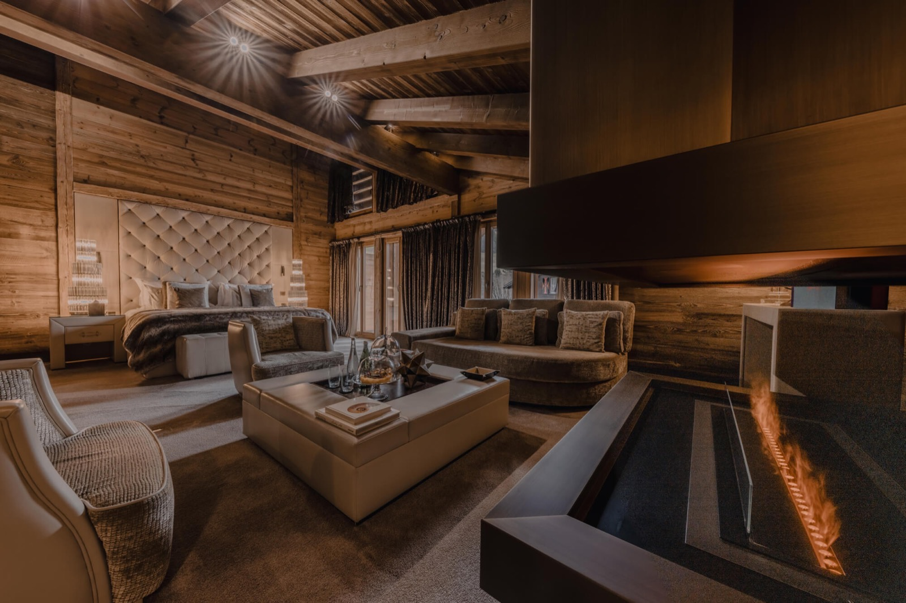
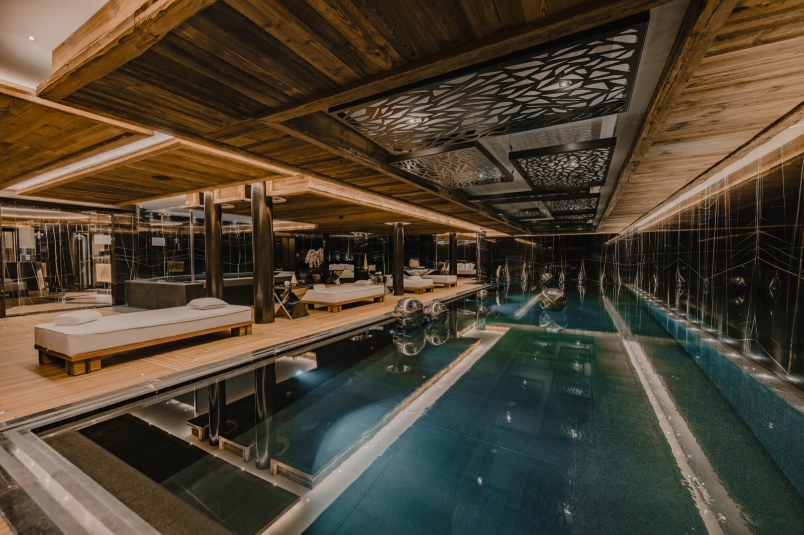
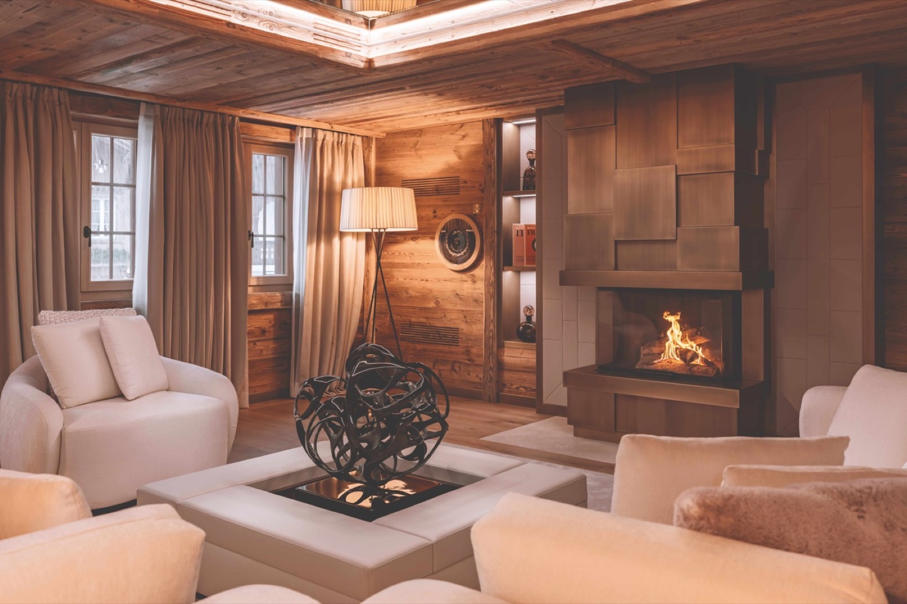
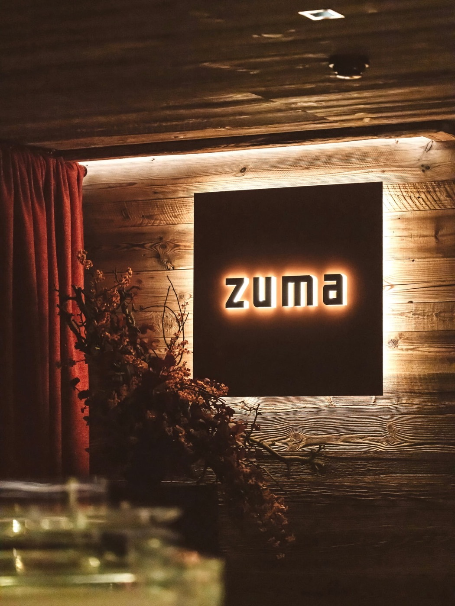

10 月 22 日，瑞士。Ultima Capital 官宣了一笔奇怪的生意：旗下 Gstaad 的两处物业，Ultima Hotel Gstaad 和 Ultima Promenade Gstaad，从 12 月 4 日起改名 Fouquet's Gstaad。
改名不稀奇。酒店业每年都有翻牌。稀奇的是交易结构：Ultima 保留两处资产的完整产权，原有管理团队全部留任，已确认的预订照常履行。变的只有门口那块牌子，和牌子背后的分销网络。

01｜先算一笔账
这栋楼的房量值得单独念一遍：11 间套房，加 6 间公寓，一共 33 间卧房，面积 46 到 250 平方米。另有一栋四层私人木屋，9 间卧室，能住 20 个人，配私人影院、游戏室、夜店和专属厨师。
公共部分的配置按 200 间房的酒店标准给的：超过 800 平方米的水疗，15 米室内泳池，桑拿、蒸汽、雪浴、5 间理疗室，护理用的是 Augustinus Bader；健身区全套 Technogym，两台 Pilates Reformer，一间瑜伽室。
拿 800 平方米除以 33，每间卧房背后站着 24 平方米的水疗。这个数字在行业里是什么水平？一家 300 间房的度假村，水疗通常在 1,500 到 2,000 平方米，除下来是 5 到 7 平方米。Fouquet's Gstaad 的这一项，是常规的五倍。

02｜小，是定价工具
大多数人把「房间少」理解成妥协，物业就这么大，只能开 33 间。
Gstaad 的算法反过来。这个伯尔尼高地的小镇，一百年来靠的不是滑雪场的规模，是「安静」本身：不许赛车经过主街，酒店不挂霓虹灯，来的人图的就是不被看见。供给端的稀缺是刻意维护出来的。
Fouquet's Gstaad 把这套逻辑做成了数学题。33 间卧房意味着雪季最满的时候，整栋楼同时只有 33 组客人。管家认识每一个人，泳池永远不挤，早餐不用等位。这些体验没法单独收费，但它们全部折进了房价。
再往深一层：私宅部分把「酒店」和「家」的边界抹掉了。那栋 1,500 平方米的木屋按周整栋出租，20 个客人分摊，人均价未必比套房贵，体验却是「整栋山屋都是你的」。这是套房给不了的产品。
03｜一笔没发生的交易
回到开头那个奇怪的结构。酒店业的价值通常拆成三块：资产（楼）、运营（管理）、品牌（招牌）。
传统做法是三块绑在一起卖：业主缺钱，连楼带管理权卖给集团。Ultima 的做法是只租第三块。楼还是自己的（它是一家在 BX Swiss 上市的地产公司，Gstaad 的物业是它的资产负债表），运营团队不动，只借了巴里耶的招牌和它背后的预订系统。
对 Ultima，这一步把沉睡十年的资产重新推到国际客群的视野里，一分股权都没稀释。对巴里耶，不花一分钱买楼，就拿到了阿尔卑斯最贵地址之一的一个物业。合同金额双方都没披露，但结构本身已经说明：这是一笔双方都在避免重资产的交易。

04｜Fouquet's 是谁
不熟这个牌子的话补一句背景：Fouquet's 1899 年开在巴黎香榭丽舍大街和乔治五世街的转角，最初是一家咖啡馆餐厅，后来变成法国电影圈的据点，凯撒奖的官方晚宴在这里办了几十年。母公司是法国博彩和酒店集团巴里耶（Groupe Barrière）。
这几年它把餐厅牌子做成了酒店系列：巴黎、纽约、Courchevel、圣巴茨，今年 6 月在米科诺斯开出第五家，12 月的 Gstaad 是第六家。每一家都不复制巴黎的模板，Gstaad 这家干脆把招牌餐厅的位置让给了 Zuma 的快闪——东京系的当代日本料理，把一批完全不同的客人带进阿尔卑斯。

05｜这单生意值多少个案例
把镜头拉远。过去五年，奢华酒店业的主流叙事是品牌住宅：把服务卖给买房的人，Four Seasons 在拉斯维加斯卖掉 9.5 亿美元的公寓。Ultima 这单是同一件事的轻量版：不卖产权，只租品牌，租期、费用、权责全部留在合同里。
对亚洲业主，这个案例尤其值得抄。大量高端物业卡在同一个困境里：楼是好楼，客源跟不上，卖掉不甘心，自己运营力不从心。「借牌不卖楼」提供了一个中间选项，代价是一笔品牌使用费，换来的是国际分销、会员体系和一块被认得的招牌。
12 月 4 日开业，正好接上雪季。这间酒店会不会成为 Gstaad 最难订的床位，一个雪季就能见分晓。
- 开业：2026 年 12 月 4 日
- 房量：11 间套房 + 6 间公寓，共 33 间卧房；另有一栋 9 卧私宅
- 水疗：800+ 平方米，15 米室内泳池，Augustinus Bader 护理
- 餐饮：Zuma 快闪
- 地址：Gsteigstrasse 70, 3780 Gstaad, Switzerland
- 订位：+41 33 748 05 50 · reservations-gstaad@fouquets.com
一间只有 33 间卧房的酒店，凭什么是阿尔卑斯的新天花板？如果你只订得起一晚，你会把它留给雪季的哪一天？
curiohood · Stay Curious
事实核对：改名公告 2026 年 10 月 22 日、12 月 4 日开业、11 间套房与 6 间公寓共 33 间卧房、46–250 平方米、1,500 平方米九卧私宅（可住 20 人，配私人影院与夜店）、800 平方米以上水疗与 15 米泳池、Augustinus Bader 护理、Technogym 健身区、Zuma 快闪、Ultima 保留产权与管理团队、已确认预订照常履行，据 Barrière 与 Ultima Capital 新闻稿及 Hospitality Net、The Hospitality Tribune 报道；Fouquet's 1899 年创立于巴黎、Gstaad 为系列第六家（前五家为巴黎、纽约、Courchevel、圣巴茨、米科诺斯），据巴里耶集团公开资料；私宅地址 Gsteigstrasse 70 与订位信息，据酒店官网。配图均来自酒店官网。